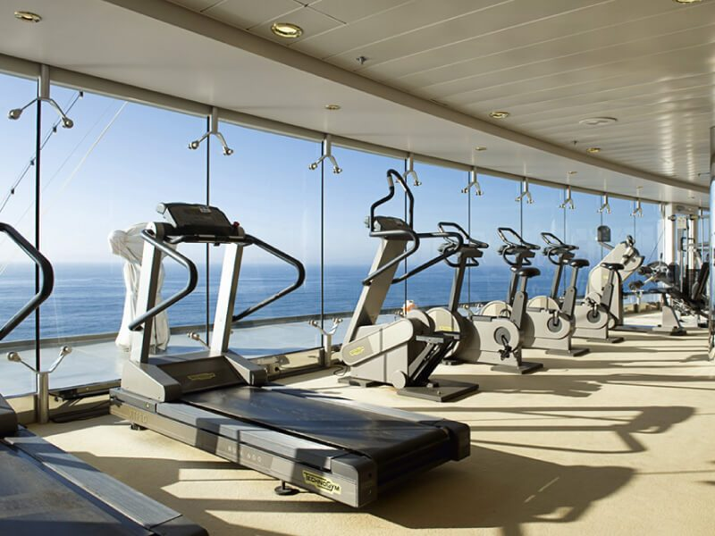
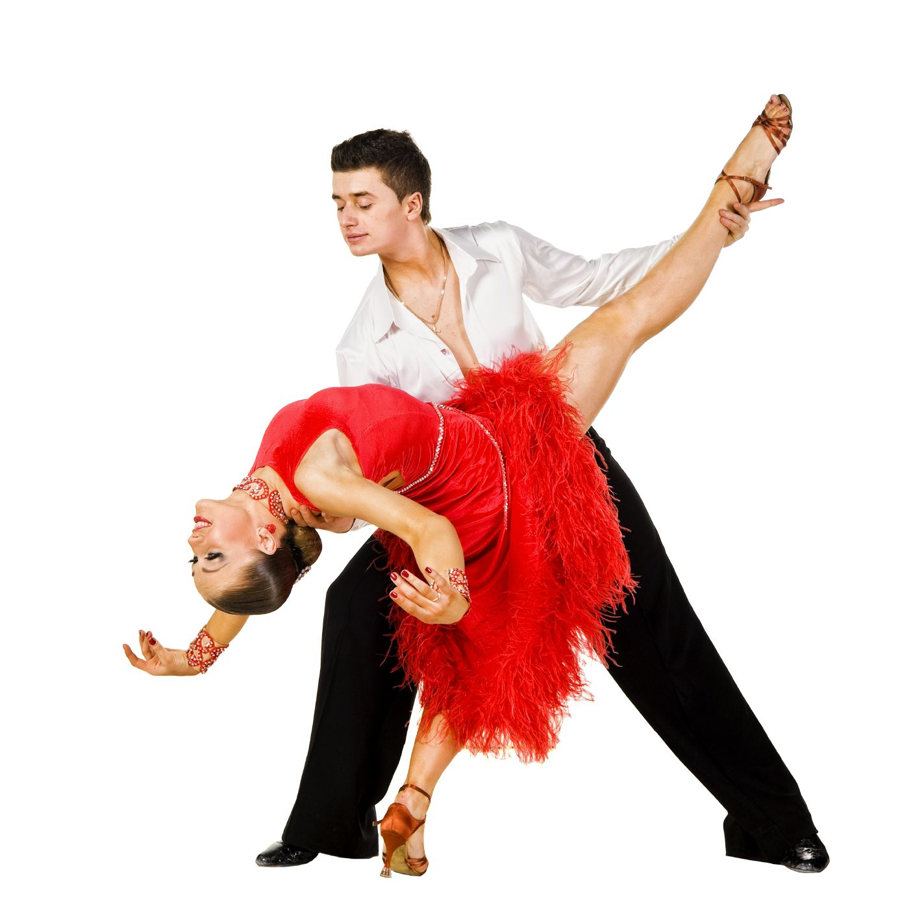

De nombreuses variantes des cours d'aquagym vous seront proposés sur notre bateau de croisière. D'une piscine à une autre, d'un maître nageur à l'autre, les exercices proposés seront très différents.
Voici un petit descriptif des différents cours d'aquagym proposés pendant votre croisière:
Si vous êtes sportif, nos navires de croisière et leur salle de sport avec vue sur la mer vous attendent avec les appareils de fitness les plus modernes:
Avec Philippe et Marie-Line, professeurs passionnés, vous pourrez découvrir ou vous perfectionner dans la pratique de nombreuses danses, à travers le "Style Dancing"
